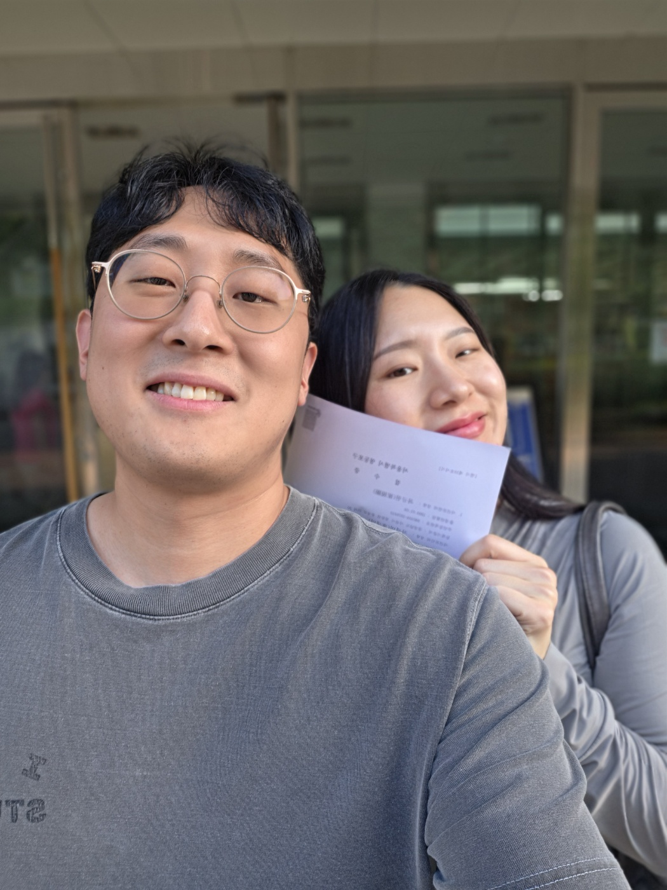
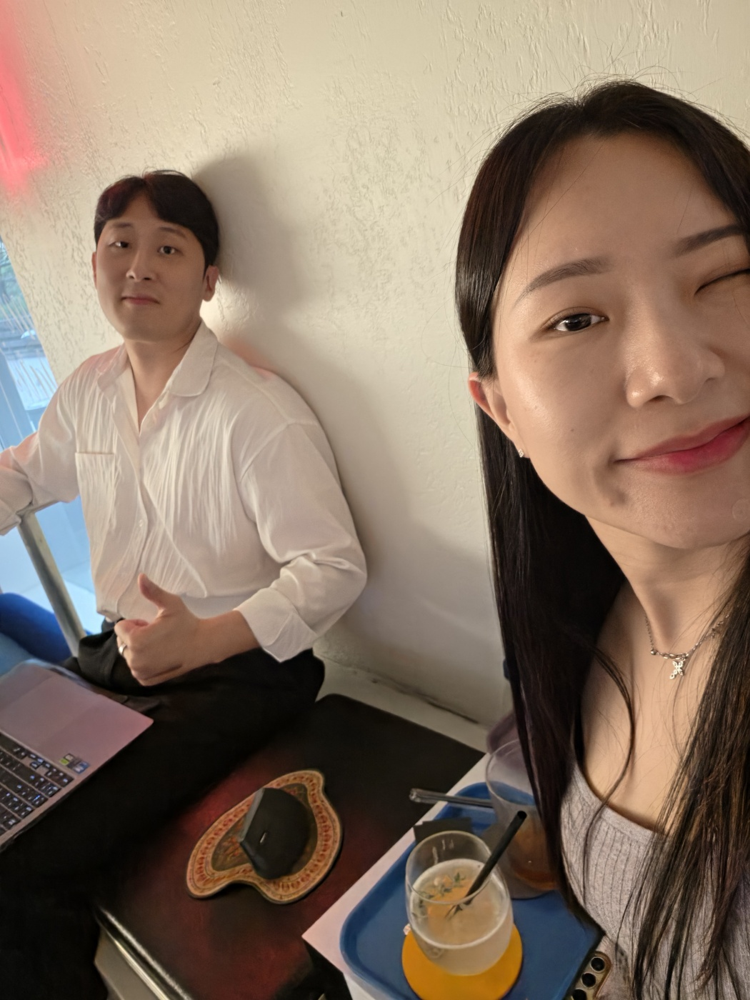

한 사람은 바깥의 신호를 읽고, 한 사람은 안쪽의 질서를 세웁니다. 하지만 같이 산다는 건 역할을 나누는 것만으로 끝나지 않습니다.
감정이 올라오는 순간에도 서로를 적이 아니라 같은 팀으로 다시 인식하는 기술. 그것이 우리 둘의 다음 OS입니다.
버그는 생깁니다. 중요한 건 업데이트를 멈추지 않는 것입니다.
재부팅 완료. 우리는 다시 같은 방향을 봅니다.
- 신호를 읽는다
- 미래를 본다
- 구조를 만든다
- 말이 길어질 수 있다
- 깊이를, 상대가 받을 수 있는 온도로 낮추는 훈련이 필요하다
- 질서를 세운다
- 감정을 느낀다
- 생활을 붙든다
- 감정이 결론이 될 수 있다
- 감정을 결론으로 만들기 전에 정돈하는 훈련이 필요하다
둘은 다르게 봅니다. 그래서 부딪힙니다.
하지만 같은 방향을 보면 — 한 사람은 미래를 읽고, 한 사람은 그 미래가 무너지지 않게 만듭니다.
참는 기술이 아니라, 같은 팀으로 돌아오는 기술
감정 컨트롤은 화가 안 나는 사람이 되는 것이 아닙니다. 화가 났을 때, 상대에게 상처를 던지기 전에 우리가 같은 팀이었다는 사실을 다시 떠올리는 기술입니다.
새미에게 필요한 것은 참는 힘만이 아닙니다. 규현에게 필요한 것은 설명하는 힘만이 아닙니다.
새미는 감정을 정돈하는 법을 배우고, 규현은 설명하기 전에 먼저 안심을 주는 법을 배웁니다.
감정은 없애는 것이 아니라, 다시 제자리에 놓는 것입니다.
없애는 것이 아니라, 결론으로 만들지 않는 것
새미가 해야 할 일은 감정을 없애는 것이 아닙니다. 감정이 올라왔을 때, 그 감정을 바로 결론으로 만들지 않는 것입니다.
새미가 할 수 있는 일- 화가 났을 때, 바로 관계의 끝으로 가지 않기.
- “됐어” 대신 “지금은 정리가 안 돼”라고 말하기.
- 규현의 말이 길어질 때 “결론부터 말해줘”라고 요청하기.
- 불안할 때 상대를 시험하기보다, 필요한 안심을 말하기.
- 감정이 올라온 날에는 결론을 다음날로 넘기기.
- 내가 진짜 원하는 것이 사과인지, 설명인지, 행동인지 구분하기.
- 규현이 미래를 말할 때, 오늘 할 수 있는 한 가지로 내려오게 돕기.
“됐어”는 됐다는 뜻이 아닐 확률이 높습니다. 그러나 상대는 진짜 됐다고 믿을 수 있습니다.
그러므로 — 번역이 필요합니다.
싸우지 말고, 업데이트합시다
각자 한 줄, 그리고 함께 한 줄
- 안심을 먼저 준다
- 설명을 짧게 한다
- 미래를 오늘의 행동으로 내려준다
- 감정 앞에서 논리로 이기려 하지 않는다
- 새미가 정리할 시간을 준다
- 말투를 먼저 점검한다
- 감정을 바로 결론으로 만들지 않는다
- 필요한 안심을 말로 요청한다
- 정리가 안 되면 시간을 요청한다
- 긴 설명을 자르되 공격하지 않는다
- 작은 정돈을 통해 큰 구조를 돕는다
- 미래를 불안이 아니라 준비로 받는다
- 같은 편이라는 사실을 먼저 확인한다
- 문제를 하나씩만 다룬다
- 밤에는 큰 결론을 내리지 않는다
- 다음날 다시 볼 수 있는 관계를 만든다
- 싸움 이후 패턴을 기록하고 업데이트한다
우리는 완벽한 부부가 되려는 것이 아닙니다. 업데이트를 멈추지 않는 팀이 되려는 것입니다.

same-direction.jpg규현은 바깥의 신호를 읽고, 새미는 안쪽의 질서를 세웁니다. 규현은 미래를 가져오고, 새미는 그 미래가 생활 속에서 반복될 수 있게 만듭니다.
Weplace와 Mashcore34, 가정과 아이, 일과 사랑은 따로 있지 않습니다. 하나의 생활 OS 안에서 같이 돕니다.
우리가 서로를 적으로 보지 않고 같은 팀으로 돌아오는 시간이 짧아질수록, 우리의 삶은 더 큰 구조를 담을 수 있습니다.
our-first-signal.jpg규현이 읽는 바깥의 신호도, 새미가 세우는 안쪽의 질서도 아닌 — 둘 사이에서 시작된, 우리가 함께 읽은 첫 신호.
사랑은 감정이 흔들리지 않는 상태가 아닙니다. 흔들린 뒤에도 다시 같은 편으로 돌아오는 기술입니다.
Mashcore는 바깥의 신호를 읽고, Saemi는 안쪽의 질서를 세웁니다. 둘이 같은 방향을 볼 때, 우리의 삶은 오래 갈 수 있는 구조가 됩니다.

same-team.jpg빠르게 빛나는 것보다, 흔들린 뒤에 다시 돌아오는 힘.
재부팅은 짧게, 스킨십은 길게.